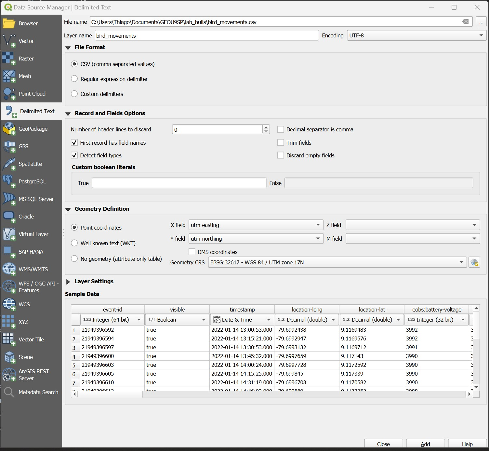
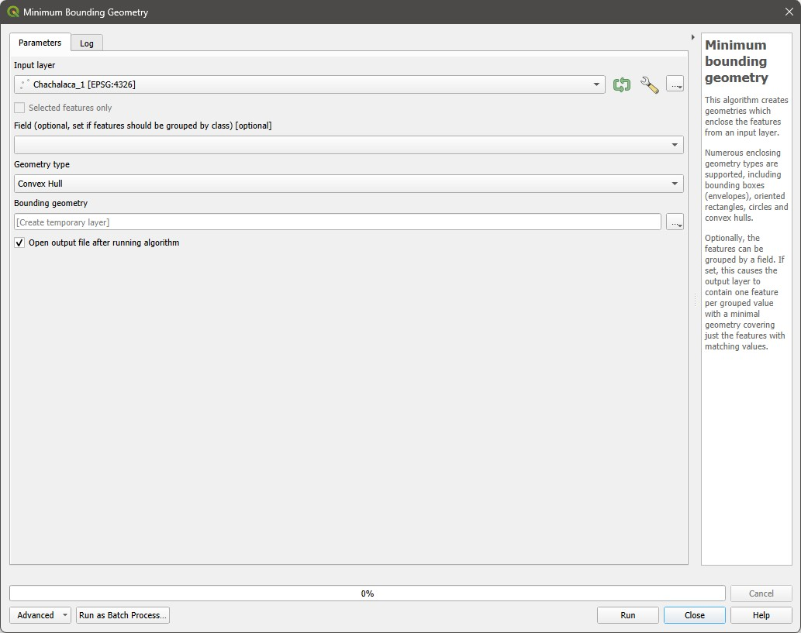
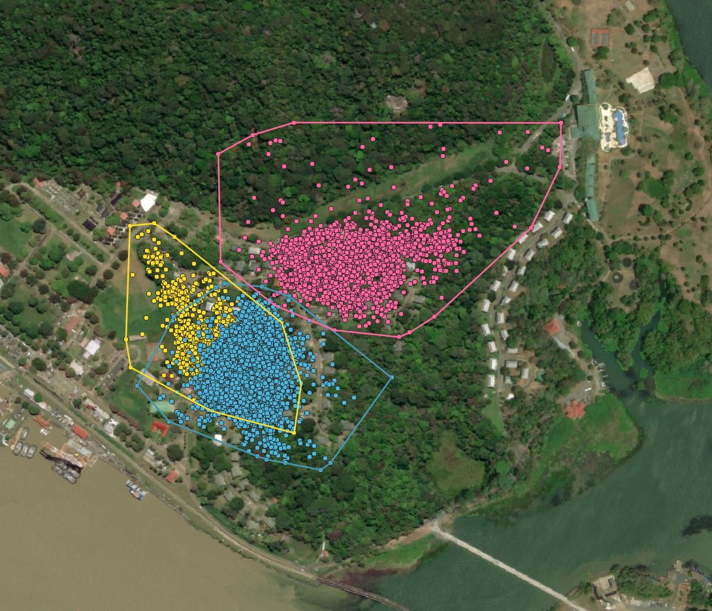
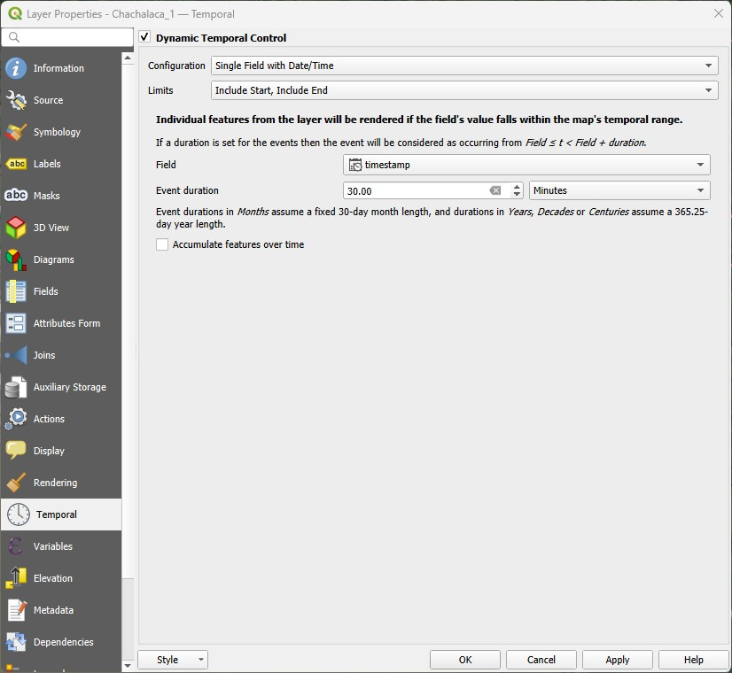
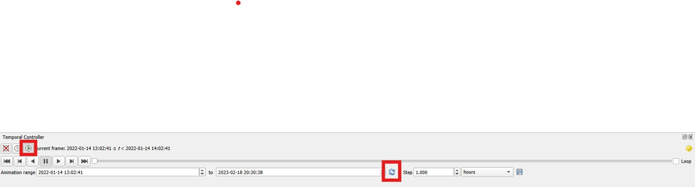
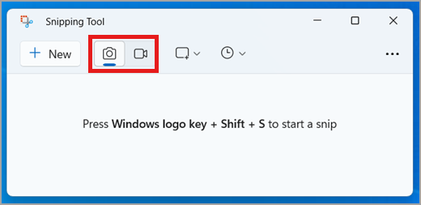

14 Lab 14 - Convex Hulls and Interpolation
IN PREPARATION
14.1 Guided Exercise 1 - Preparing the data
This exercise will be based on actual research data collected by Dr. Adam Fell as part of their PhD research developed at University of Stirling.
Adam has monitored the movement of bird species in Panama, to understand how land cover affects their movement and behaviour. He used GPS tracking tags attached via Teflon strings, like a backpack, to the back of the bird. The tags were programmed to measure locations from every 30 mins to every two hours during daytime (05:00 – 19:00), with bursts of every 30 mins if the batteries were fully charged. At night, the tags were scheduled to turn off to save battery energy, knowing that after dark, these species would not be active. Along with the GPS module, each tag also measured three-dimensional acceleration (ACC). Since ACC measurements consumed very little energy, the tags were programmed to take ACC measurements every 10 mins during a 24-hour period. These measurements confirmed little activity during night-time hours. Data was first stored on the device, then remotely downloaded through a radio link once a week to ensure that the device had not fallen off the individual.
The data consists of a Comma Separated Values (CSV) file containing the location, timestamp, and other information for each tracking tag, and can be downloaded here. The original data is hosted by the Movebank database, a global database of animal movement data.
In total, there are four bird species monitored:
Ortalis cinereiceps (grey-headed Chachalaca): three individuals, identified in the individual_local_identifier field as Chachalaca_1 to _4.

Ramphastos swainsonii (Chestnut-mandibled Toucan): two individuals identified in the individual_local_identifier field as Chesnut_1 and _2.

Ramphastos sulfuratus (Keel-billed Toucan): two individuals identified in the individual_local_identifier field as Keel-billed_1 and _2.

Amazona autumnalis (Red-lored parrot): one individual identified in the individual_local_identifier field as Parrot_1.

There is also a GeoTIFF raster with land cover data for the same region, obtained from the ESRI Living Atlas Sentinel-2 10m Global Land Cover dataset.
14.1.1 Preparing the data
Download the data and create a project folder and a new QGIS project.
Then import the bird movement data using the
Source Data Manager > Delimited Text, like in the figure below. Make sure you pick the CRS indicated (EPSG:32617 WGS84 - UTM zone 17N), and that thetimestampfield is of typeDate & Time.

The file has both Latitude Longitude and Universal Transverse Mercator (UTM) coordinates, which are similar to British Grid coordinates, but for the entire world. UTM coordinates are ideal for field data that does not span large areas (you can read more about it here). We will use UTM coordinates since they are metric, and thus some automatic area calculations that will happen later on will have the right units.
- Now split the file into separate layers for each individual bird, saving each file as a separate
geopackage(to preserve long field names) named as theindividual_local_identifiertag (ex: Chachalaca_1.gpkg). UseSelect by expressionon theindividual_local_identifierfield and thenExport > Save selected features as...to create each subset.
How many records, covering what timespan, are available for each individual bird?
14.2 Guided Exercise 2 - Convex Hulls
Convex hulls are a type of Minimum Enclosing Polygon. The best way to think of it is as if the points were pegs on a board, and you wrapped a stretch band around them. The convex hull is the shape with the smallest perimeter enclosing all points.

In animal and movement research, convex hulls are commonly to used to define species ranges or, for individuals, home ranges.
There are two separate tools to calculate convex hulls in QGIS. The first is called Convex Hulls in Vector > Geoprocessing, but is usually NOT what you want. This tools calculates convex hulls for irregular polygons. To calculate convex hulls for points, you instead want to go to the Processing tab and then choose the Minimum Bounding Geometry tool under the Vector Geometry category.
For this exercise, we will first focus on the Chachalaca birds. We will also not consider Chachalaca_2 since it was only monitored for two months.
The first question we may want to ask as animal movement researchers is if there are well-defined territories for the birds, and if these territories overlap (i.e. do the birds interact?).
14.2.1 Calculating Convex Hulls
- Go to the
Processingtab and then launch theMinimum Bounding Geometrytool under theVector Geometrycategory.

Select the
Chachalaca_1layer asInput Layer, and thenConvex Hullfor theGeometry Type(click on theHelpbutton to see what each type of geometry represents). Save the file asChachalaca_1_home_range.shp.Repeat for
Chachalaca_3andChachalaca_4.Now set the home range polygon symbologies to an outline that is the same colour as the original points with no fill (or a transparent fill), to evaluate the overlap in home ranges. Also add the ESRI Satellite Layer from the
QuickMap Pluginfor reference. Mine looks like this:

Now using the Geoprocessing tools you have learned, calculate the amount of percent overlap between each home range. Based on this, which individuals may be interacting with each other?
14.3 Guided Exercise 3 - Habitat Use
The second question we may want to explore is what is the main types of habitats each bird is using. For that, we can use the convex hulls that determine our home rages, and the land cover layer included in the dataset. The data documentation includes a table with a key for each land cover type.
Using the tools you already know, determine which habitats comprise each Chachalaca home range, and their respective area.
14.3.1 Guided Exercise 4 - Creating temporal animations with QGIS
QGIS includes a feature called Temporal Layers, which allow us to animate the layers follwing time stamp information, to see how patterns change over time. We will use it now to look at the Chachalaca movement in time.
- First, select the
Chachalaca_1point layer and go toProperties > Temporal. Then check theDynamic Temporal Controlbox, and selectSingle Field with Date/Timeas theConfigurations, andInclude Start, Include EndasLimit. Then pick thetimestampfield forField, and set the event duration to 30 minutes (the minimum duration as per our metada). Click inApply, thenOK. A clock symbol will appear to the right of the layer name to indicate it is time-enabled.

Now repeat the process for Chachalaca_3 and Chachalaca_4.
Now launch the
Temporal Controller Panel() from the main QGIS toolbar. It will look like the panel below. If it looks different, make sure you click on theAnimated Temporal Navigationbutton (small green play button within a circle).
{kind=link}

Then calculate the time range for all time-enabled layers by clicking on the button with two blue arrows. Set the
Stepto1 hour, and then press the back play button. You will see Chachalaca_1 and Chachalaca_3 at first (remember there is no recording during the night, so there will be some periods with no points).Now pause the animation, click on the double back-arrow to return to the start, and then change the
Stepto1 day. Notice how even though Chachalaca 1 and 3 have a lot of overlap in their home ranges, on a daily basis they tend to mostly stay away from each other, seldom crossing paths. Also notice how Chachalaca 4 really tends to keep within the trees, rarely venturing into open areas.Now pause and reset again, and then set the
SteptoOne week. Notice how Chachalaca 4 tends to avoid crossing the big open patch that divides its home range, and only some times ventures into the northern area.Pause and reset the animation again. Then launch the Windows
Snipping Toolby going to theStart Menuand then typing its name (see here for Mac).
It will look lime this:

- Read this entire section before doing it. Change the snip type from image (photo camera) to video (video camera), Then click on
New. Drag the mouse to capture the mao area of QGIS, and then click onStart Recording. There will be a countdown from 3, and then the recording will start. Once it starts, press the play button in QGIS to start the animation, and let it run through. Then stop the recording.
You should now have a video recording that could be used on a presentation! Here is mine (press the play button!)
You could also use the Export Animation function of QGIS by clicking on the Disk icon of the Temporal Controller. What it does however is it saves each animation frame as one separate image, which you need to combine into a video later using video creation software, or as an animated GIF using an online tool such as EZGIF: